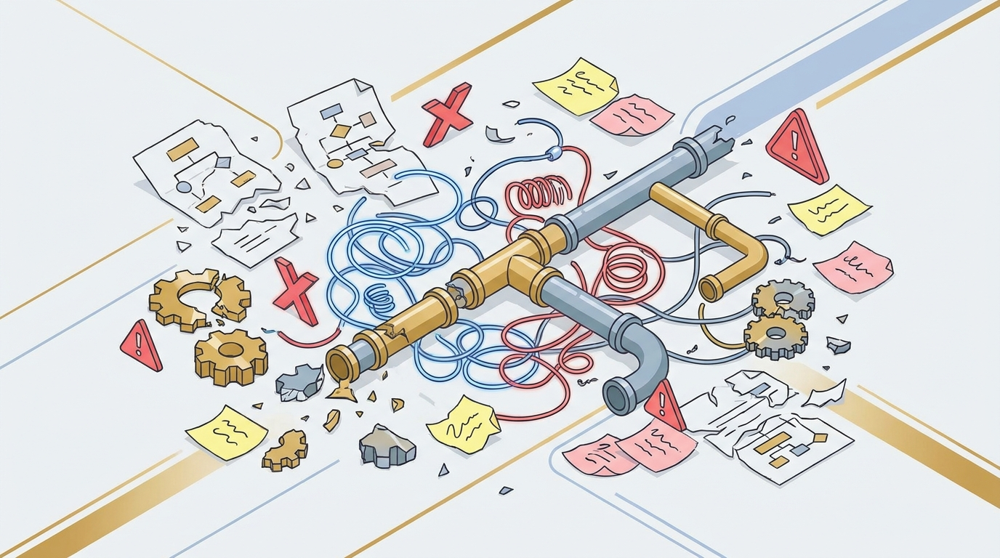

THE PROBLEM
Why multi-agent pipelines are hard
Context evaporates between agents
Each agent sees only its own input/output. The output drifts, contracts contradict each other, constraints are forgotten by the third draft.
Human gates get skipped under pressure
A 7-deliverable pipeline has 6 mid-pipeline approvals. When the operator is tired, gates get auto-approved and bad output ships.
Continuity errors repeat forever
"Tone is suddenly formal" or "the schema dropped a required column" - the same violations show up in every dispatch unless someone re-prompted by hand.

Manual multi-agent pipelines drift, break, and require a tired human to fix them.